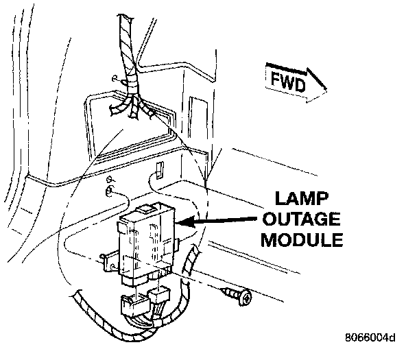

Lamp Out Module: Service and Repair
REMOVAL1. Disconnect battery negative cable.
2. Remove spare tire from carrier.
3. Remove access door.
Lamp Outage Module:

4. Remove screw holding module to inner quarter panel.
5. Disconnect wiring connectors at module.
6. Separate lamp outage module from vehicle.
INSTALLATION
1. Connect wiring connectors at module.
2. Install screw holding module to inner quarter panel.
3. Install access door.
4. Install spare tire.
5. Connect battery negative cable.